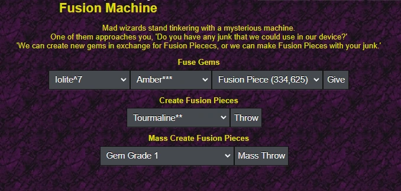

Overview

So you're playing the game and dropping a bunch of shadows that you don't need. What do you do with them? Players can smash shadows for gold, sell to others, or convert them into fusion pieces at the Fusion Machine in 2,7 Lair of Temptation.
Fusion Pieces serve three purposes: gem fusion and re-rolling, gear upgrades to Ancestral and Godly tiers, and they remain non-tradable.
Fusion Gems
Gems are required to be the same grade to fuse, and also require fusion pieces (FP) to proceed. The result maintains the grade of source gems. Three dropdown menus display inventory gems and fusion piece stacks.
Error messages include: Same Type requirement, Grade matching requirement, and insufficient Fusion Pieces notification.
Making a bloodstone for example requires much more FP than creating an Opal.
Note: Pebbles cannot be fused. Vampires have 2.5% chance to instantly upgrade Blood Tourmaline or Blood Ruby into Bloodstone.
Random Fusion Table
| Amber | Emerald | Ruby | Pearl |
|---|---|---|---|
| Garnet | Opal | Iolite | Moonstone |
| Bloodrock | Corundum | Dragon Fang | Demon Fang |
| Frozen Tear | Diamond | Atmashidade | Jade |
| Jasper | Azurite | Howlite | Hiddenite |
| Sapphire | Sunstone | Aquamarine | N/A |
Note: There is a 20% chance upon rolling a Bloodrock, Dragon Fang, or Demon Fang that it is re-rolled again.
Fusion Pool
| Gem Name | Abbreviation | Fusion Req. | FP Cost Per Grade |
|---|---|---|---|
| (Vampire) Blood Ruby | blr | Ruby + Iolte | 75 |
| (Vampire) Blood Tourmaline | blt | Tourmaline + Garnet | 75 |
| (Vampire) Blood Fang | blf | Bloodrock + Hiddenite | 100 |
| (Vampire) Bloodstone | bs | Blood Ruby + Blood Tourmaline | 150 |
| Obsidian* | obs | Black Pearl + Rogueite | 120 |
| Lazurite | laz | Opal + Rogueite | 120 |
| Wulfenite | wul | Sapphire + Rogueite | 120 |
| Citrine | cit | Jasper + Diamond | 150 |
| Petalite | peta | Jasper + Atmashidade | 150 |
| Quartz | qtz | Jasper + Tiger's Eye | 150 |
| Cobalt | cob | Howlite + Jade | 75 |
| Pyrite | py | Sunstone + Emerald | 30 / 150 |
| Kunzite | kun | Sapphire + Opal | 100 / 210 |
| Kyanite | kya | Aquamarine + Moonstone | 60 / 180 |
| Zoisite | zoi | Amber + Pearl | 30 / 150 |
| Apatite | api | Garnet + Black Pearl | 100 / 210 |
| Rosalite | ros | Iolite + Corundum | 60 / 180 |
| (Non-Vampire) Blood Ruby | blr | Ruby + Iolite | 75 |
| (Non-Vampire) Blood Tourmaline | brt | Tourmaline + Garnet | 75 |
| (Non-Vampire) Blood Fang | blf | Bloodrock + Hiddenite | 100 |
| (None-Vampire) Bloodstone | bs | Blood Ruby + Blood Tourmaline | 150 |
Creating Fusion Pieces
Gems, by themselves, do not provide very much FP at all, although you can increase it by upgrading your Estate. Gear cannot be destroyed if equipped or containing gems.
When an item is selected, it will calculate the FP you will get, and then randomizes that number up to 4x higher.
Gem FP Table
| Grade | FP | FP (E) |
|---|---|---|
| 1 | 1-4 | 3-12 |
| 2 | 2-8 | 4-16 |
| 3 | 3-12 | 6-24 |
| 4 | 4-16 | 8-32 |
| 5 | 5-20 | 11-44 |
| 6 | 6-24 | 13-52 |
| 7 | 7-28 | 16-64 |
| 8 | 9-36 | 19-76 |
| 9 | 10-40 | 23-92 |
If you are R1+, you have full access to everything immediately. Additionally, pebbles cannot be destroyed for FP.
Shadow FP Table
| Item Class | Shadow FP | Mythic FP | Ancestral FP | Godly FP |
|---|---|---|---|---|
| 1 | 11-44 | 22-88 | 22-88 | 329-1,316 |
| 2 | 11-44 | 22-88 | 22-88 | 329-1,316 |
| 3 | 16-64 | 31-124 | 31-124 | 470-1,880 |
| 4 | 24-96 | 47-188 | 47-188 | 705-2,820 |
| 5 | 21-124 | 63-252 | 63-252 | 940-3,760 |
| 6 | 39-156 | 78-312 | 78-312 | 1,175-4,700 |
| 7 | 47-188 | 94-376 | 94-376 | 1,410-5,640 |
| 8 | 55-220 | 110-440 | 110-440 | 1,645-6,580 |
| 9 | 63-252 | 125-500 | 125-500 | 1,880-7,520 |
| 10 | 71-284 | 141-564 | 141-564 | 2,115-8,460 |
| 11 | 78-312 | 157-628 | 157-628 | 2,350-9,400 |
| 12 | 86-344 | 172-688 | 172-688 | 2,585-10,340 |
| 13 | 94-376 | 188-752 | 188-752 | 1,880-7,520 |
| 14 | 102-408 | 204-816 | 204-816 | 3,056-12,224 |
| 15 | 110-440 | 219-876 | 219-876 | 3,291-13,164 |
| 16 | 118-472 | 235-940 | 235-940 | 3,526-14,104 |
| 17 | 125-500 | 251-1,004 | 251-1,004 | 3,761-15,044 |
| 18 | 333-1,332 | 666-2,664 | 666-2,664 | 9,989-49,956 |
| 19 | 253-1,412 | 705-2,820 | 705-2,820 | 10,577-42,308 |
| 20 | 372-1,488 | 744-2,976 | 744-2,976 | 11,165-44,660 |
| 21 | 392-1,568 | 783-3,132 | 783-3,132 | 11,752-47,008 |
| 22 | 411-1,644 | 823-3,292 | 823-3,292 | 12,340-49,360 |
| 23 | 431-1,724 | 862-3,448 | 862-3,448 | 12,927-51,708 |
| 24 | 451-1,804 | 901-3,604 | 901-3,604 | 13,515-54,060 |
| 25 | 470-1,880 | 940-3,760 | 940-3,760 | 14,103-56,412 |
Mass Create Fusion Pieces
This option destroys entire inventory batches with identical FP rewards. Options include:
- Gem Grade X: Destroys all gems of specified grade
- ALL Gem Grades (X - X): Destroys gems within range (Grade 9 excluded)
- Shadow/Mythics (X - X): Destroys unequipped gear without gems in specified tiers
- All of the Above (X - X) (X - X): Combines both options
Mass-Smash Algorithm
Smashing items one by one does not have any limitations for gear, but the mass-smash option does. Two confirmation screens protect against accidental destruction. Grade 9 gems cannot be mass-smashed.
Gem Level Requirements
| Grade | Level Req. |
|---|---|
| 1 | 1+ |
| 2 | 1+ |
| 3 | 300+ |
| 4 | 450+ |
| 5 | 1,500+ |
| 6 | 5,000+ |
| 7 | 15,000+ |
| 8 | 50.000+ |
| 9 | 20,000+ |
Gear Level Requirements
| Item Class | Level Req. |
|---|---|
| 1 | 1 |
| 2 | 1 |
| 3 | 1 |
| 4 | 1 |
| 5 | 220 |
| 6 | 320 |
| 7 | 420 |
| 8 | 820 |
| 9 | 1,000 |
| 10 | 3,000 |
| 11 | 3,500 |
| 12 | 4,500 |
| 13 | 5,000 |
| 14 | 8,500 |
| 15 | 10,000 |
| 16 | 17,000 |
| 17 | 20,000 |
| 18 | 50,000 |
| 19 | 70,000 |
| 20 | 120,000 |
| 21 | 400,000 |
| 22 | 700,000 |
| 23 | 1,000,000 |
| 24 | 3,000,000 |
| 25 | 8,000,000 or R1+ |